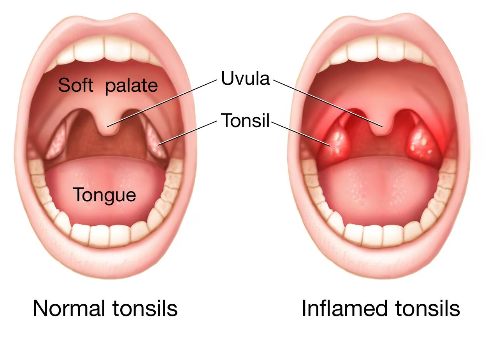

AMIGDALITIS
Descripción general
La amigdalitis es la inflamación de las amígdalas, dos masas de tejido de forma ovalada situadas a ambos lados de la parte posterior de la garganta. Los signos y síntomas de la amigdalitis comprenden hinchazón de las amígdalas, dolor de garganta, dificultad para tragar y sensibilidad de los ganglios linfáticos a los lados del cuello.
La causa de la mayoría de los casos de amigdalitis es la infección con un virus frecuente, pero las infecciones bacterianas también pueden provocar amigdalitis.
Dado que el tratamiento adecuado para la amigdalitis depende de la causa, es importante obtener un diagnóstico rápido y preciso. La cirugía para extirpar las amígdalas, que alguna vez fuera un procedimiento frecuente para tratar la amigdalitis, se realiza usualmente solo cuando la amigdalitis se produce con frecuencia, no responde a otros tratamientos o provoca complicaciones graves.

Amígdalas inflamadas
Las amígdalas son masas carnosas ubicadas a ambos lados de la parte posterior de la garganta.
Síntomas
La amigdalitis afecta con mayor frecuencia a niños entre la edad preescolar y mediados de la adolescencia. Entre los signos y síntomas frecuentes de la amigdalitis, podemos enumerar los siguientes:
- Amígdalas rojas e inflamadas
- Parches o recubrimientos blancos o amarillos en las amígdalas
- Dolor de garganta
- Dificultad o dolor al tragar
- Fiebre
- Glándulas sensibles y dilatadas (ganglios linfáticos) en el cuello
- Voz rasposa, apagada o ronca
- Mal aliento
- Dolor de estómago
- Dolor o rigidez de nuca
- Dolor de cabeza
En los niños pequeños que no son capaces de describir cómo se sienten, algunos de los síntomas de amigdalitis podrían ser los siguientes:
Cuándo consultar al médico
Si tu hijo presenta síntomas que puedan indicar amigdalitis, es importante obtener un diagnóstico exacto.
Llama a tu médico si tu hijo tiene:
- Dolor de garganta con fiebre
- Dolor de garganta que no se alivia después de 24 a 48 horas
- Dolor o dificultad al tragar
- Debilidad, fatiga o agitación extremas
Solicita atención médica inmediata si tu hijo tiene alguno de los siguientes signos:
- Dificultad para respirar
- Dificultad extrema al tragar
- Babeo excesivo
Causas
La mayoría de las veces la amigdalitis es causada por virus comunes, pero una infección bacteriana tambié pueden ser la causa.
La bacteria que más comúnmente causa amigdalitis es la Streptococcus pyogenes (estreptococo del grupo A), la bacteria que causa amigdalitis estreptocócica. Otras cepas del estreptococo y otras bacterias también pueden causar amigdalitis.
¿Por qué se infectan las amígdalas?
Las amígdalas son la primera línea de defensa del sistema inmunitario contra las bacterias y los virus que ingresan a la boca. Esta función puede hacer que las amígdalas se vuelvan especialmente vulnerables a la infección y la inflamación. No obstante, la función del sistema inmunitario de las amígdalas disminuye después de la pubertad (un factor que podría ser la causa de los casos pocos frecuentes de amigdalitis en adultos).
Factores de riesgo
Algunos de los factores de riesgo de la amigdalitis son los siguientes:
- La edad temprana. La amigdalitis afecta con mayor frecuencia a los niños, y la amigdalitis causada por bacterias es más común en niños de 5 a 15 años.
- La exposición frecuente a gérmenes. Los niños en edad escolar están en contacto directo con sus compañeros y se exponen con frecuencia a virus o bacterias que pueden causar amigdalitis.
Complicaciones
La inflamación o la hinchazón de las amígdalas debidas a la amigdalitis frecuente o continua (crónica) puede causar complicaciones tales como:
- Interrupción de la respiración durante el sueño (apnea obstructiva del sueño)
- Infección que se propaga profundamente a los tejidos circundantes (celulitis amigdalina)
- Infección que produce una acumulación de pus detrás de una amígdala (absceso periamigdalino)
Infección por estreptococo
Si la amigdalitis causada por el estreptococo del grupo A u otra cepa de la bacteria estreptocócica no se trata, o si no se completa el tratamiento con antibióticos, tu hijo tiene un mayor riesgo de sufrir trastornos poco frecuentes como:
- Fiebre reumática, una enfermedad inflamatoria grave que puede afectar al corazón, las articulaciones, el sistema nervioso y la piel
- Complicaciones de la escarlatina, una infección estreptocócica caracterizada por una erupción prominente
- Inflamación de los riñones (glomerulonefritis posestreptocócica)
- Artritis reactiva posestreptocócica, una enfermedad que causa inflamación en las articulaciones
Prevención
Los gérmenes que causan las anginas (amigdalitis) bacterianas y virales son contagiosos. Por lo tanto, la mejor prevención es tener buenos hábitos de higiene. Enséñale a tu hijo a realizar lo siguiente:
- Lavarse las manos completamente y con frecuencia, sobre todo después de ir al baño y antes de comer
- Evitar compartir alimentos, vasos, botellas de agua o utensilios
- Reemplazar el cepillo de dientes después de recibir un diagnóstico de anginas
Para ayudar a tu hijo a prevenir la propagación de una infección bacteriana o viral a otras personas:
- Mantén a tu hijo en la casa cuando está enfermo
- Pregúntale al médico cuándo puede volver a la escuela tu hijo
- Enséñale a tu hijo a que tosa o estornude en un pañuelo de papel o, cuando sea necesario, en la parte interna del codo
- Enséñale a tu hijo a que se lave las manos después de estornudar o toser